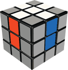
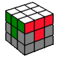
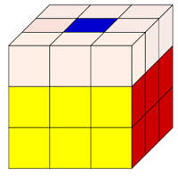
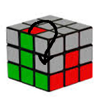
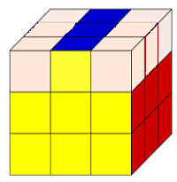
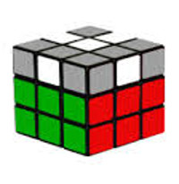

Résoudre pour la première fois le Rubik's Cube !
Si vous êtes ici, c'est parce que vous voulez apprendre à résoudre le Rubik's Cube, soit pour enfin venir à bout de ce casse-tête mythique, soit pour avoir l'air intelligent X).
Ce tutoriel est garanti réussite, qui que vous soyez, vous pouvez résoudre le "casse-tête parfait" sans trop d'encombres (ou même avec, la satisfaction à la fin n'en sera que plus grande!) et assez rapidement si vous y mettez le temps.
Si vous avez des questions ou que vous ne comprenez pas une partie de ce tutoriel, n'hésitez pas à consulter la partie "Aide et rapports" où vous trouverez un chat (du verbe Anglais "to chat"="discuter", pas l'animal bien sûr!) et où vous pourrez dire aux gentils webmasters ce qui ne va pas. Toutefois, ne les spammez pas, patientez, ils finiront par vous répondre ;).
On va résoudre le Cube de manière méthodique, c'est à dire pas n'importe comment : on peut le faire tranche par tranche, face par face, en agrandissant des bloc, etc... Nous allons nous intéresser à la méthode la plus facile à assimiler, la Méthode Tranche par Tranche pour Débutants, que l'on abrègera "MTTD".
Pour arriver à nos fins, nous aurons besoin certes d'intuition, mais aussi d'algorithmes, des suites de mouvement qui on une action spécifique sur le cube. Exemple : faire tourner trois coins dans le sens des aiguilles d'une montre.
Pour les transcrire, nous utiliserons la notation internationale, la plus utilisée, partout. Mais si vous êtes fâchés avec l'Anglais, nous utiliserons aussi la notation "Made in LTDC" ;), qui est tout en Français. Il est cependant recommandé d'utiliser la notation internationale.
Enfin, vous devrez connaitre le nom des pièces du Cube ainsi que leur spécifités. Sur ce, on commence tout de suite, c'est parti!
- 1.1 : La croix
- 1.2 : La face avec la couronne
- 2 : La tranche du milieu (deuxième couronne)
- 3.1 : faire une croix sur la dernière tranche
- 3.2 : orienter la croix
- 3.3 : permuter les coins
- 3.4 : orienter les coins
0.1 : La notation
Comme dit plus haut, pour faire des suites de mouvements, nous allons utiliser un code :

C'est simple :
- On note "U" pour la face haute car "haut" en Anglais se dit "up"
- On note "D" pour la face du bas car "bas" en Anglais se dit "down"
- On note "R" pour la face droite car "droite" en Anglais se dit "right"
- On note "L" pour la face gauche car "gauche" en Anglais se dit "left"
- On note "F" pour la face de devant car "devant" en Anglais se dit "front"
- Et enfin, on note "B" pour la face de derrière car "derrière" en Anglais se dit "back"
- On note "H" pour la face haute
- On note "B" pour la face du bas
- On note "D" pour la face droite
- On note "G" pour la face gauche
- On note "Av" pour la face avant
- Et enfin, on note "Ar" pour la face arrière
Si la lettre est suivie d'un apostrophe «'», on tourne la face d'un quart de tour dans le sens inverse des aiguilles d'une montre. Sinon on tourne la face dans le sens des aiguilles d'une montre.
Exemple : R U2 F' D R' L2 ou D H2 Av' Ar D' G2 :
- tourner la face droite d'un quart de tour dans le sens des aiguilles d'une montre
- tourner la face haute d'un demi tour (le sens n'a pas d'importance puisque c'est un demi-tour)
- tourner la face avant d'un quart de tour dans le sens inverse des aguilles d'une montre
- tourner la face du bas d'un quart de tour dans le sens des aiguilles d'une montre
- tourner la face droite d'un quart de tour dans le sens inverse des aiguilles d'une montre
- enfin, tourner la face gauche d'un demi tour
0.2 : Les pièces qui composent le rubik's cube
Le Rubik's Cube est composé de 26 pièces cubiques, ainsi que d'un centre au cœur du cube, le "core" dont nous ne nous occuperons pas, vu qu'il n'a pas beaucoup d'intérêt. Autrement, sur ces 26 pièces, il y a :
- 6 pièces de centres, immobiles, qui ont une seule couleur
- 8 pièces de coins, qui ont trois couleurs
- Ainsi que 12 pièces d'arête, qui ont deux couleurs
À partir de maintenant, nous pouvons enfin rentrer au cœur du sujet, la RÉSOLUTION!!
1.1 : La croix
C'est parti!
Commencez par choisir une couleur présente sur votre Rubik's Cube et on va tenter de faire une croix de même couleur avec un centre et quatre arêtes :

Attention à bien faire correspondre les couleur des arêtes et celles des centres sur les côtés, c'est important. Pour cette partie, je ne peux pas vraiment vous aider car cette étape est intuitive : il y a plusieurs millions de cas, je ne peux pas tous les expliquer ;). Mais avec un peu d'entraînement, vous y arriverez de plus en plus vite et de plus en plus facilement! Courage!
1.2 : La face avec la couronne
Maintenant que vous avez votre croix, il faut maintenant mettre en place les coins, eux aussi à la bonne place :

Il y a là aussi une part d'intuitivité, mais si vous bloquez, voici un peu d'aide : trouvez le coin qui a les mêmes couleurs que les trois face sur lequel vous voulez le placer, mettez-le ensuite dessous de là où vous voulez le mettre, et répétez cet algorithme jusqu'à ce que le coin se positionne dans le bon sens là où vous le souhaitez : R' D' R D ou D' B' D B ; si au bout de six répétitions cela n'a pas fonctionné, c'est que vous avez fait une erreur quelque part. Retrouvez votre coin et recommencez, la persévérence paie toujours :)
2 : La tranche du milieu (deuxième couronne)
Si vous êtes ici, c'est parce que vous avez réussi à réaliser la première face!
Il va mainenant falloir s'attaquer à la deuxième couronne, ne vous découragez pas, c'est l'étape la plus facile :) Commencez par mettre votre Cube de manière à ce que la face précédemment faite soit sur la face du dessous (D ou B, suivant la notation choisie).
On va donc chercher à mettre les arêtes de la tranche du milieu à leur emplacement respectifs (là où il y a une croix) :

On va donc repérer les arêtes qui vont dans la deuxième couronne : facile, ce sont celles qui n'ont pas la couleur de la face opposée à la face que vous avez faite! Par exemple, sur un rubik's cube classique avec l'agencement des couleurs "mondial", si vous avez fait une face verte, les arêtes qui iront dans la deuxième couronne n'auront ni vert, ni bleu, simple non?
Prenez donc une arête qui respecte ces conditions, placez la juste au dessus du centre de sa même couleur, de la même manière que sur la photo :

Ensuite, il faut évaluer : l'arête doit-elle se placer à droite ou à gauche? Dans les deux cas, voici les algorithmes :
- Pour placer l'arête à droite : [Anglais]U R U' R' F R' F' R ou [Français] H D H' D' Av D' Av' D
- Pour placer l'arête à gauche : [Anglais] U' L' U L F' L F L'ou [Français] H' G' H G Av' G Av G'
Si aucune arête n'est sur la face haute ou qu'elle est à sa place mais pas dans le bon sens, utilisez un des deux algorithmes pour sortir une arête, la placer pour en décoincer une autre, etc...
Voila, la deuxième couronne est faite, nous pouvons à présent passer à la troisième et dernière partie, la dernière face!
3.1 : faire une croix sur la dernière tranche
Nous voila à la troisième et dernière partie de la résolution du Rubik's Cube!
Notre but va être de faire une croix sur la face haute, toujours en tenant la face faite en bas. Pour faire cette croix, trois cas possibles, un seul algorithme, nous y viendrons bientôt.
Soit il y a trois pièces de la couleur de la face haute qui forment un petit "L", soit trois cubes qui font une ligne "-", soit le seul cube du centre qui fait donc un point ".".
Premièrement, on va essayer d'avoir ce "L". Pour cela, si vous avez une ligne, mettez-la de sorte à ce qu'elle soit verticale en face de vous :

et si vous avez un point, il n'y a pas 36 solutions :D. Executez ensuite cet algorithme :
- En Anglais : R' U' F' U F R
- Et en Français : D' H' Av' H Av D
Maintenant que nous avons le "L", nous allons le positionner en tournant la face haute de manière à ce qu'il soit un "L" symétrique, comme s'il était vu dans un miroir :

Puis de refaire l'algorithme écrit plus haut. Vous voila normalement avec une croix!
3.2 : orienter la croix
Mais comme vous avez pu le remarquer, cette croix n'est pas orientée, c'est à dire que les couleurs des arêtes ne correspondent pas avec celles de la deuxième couronne : essayez de tourner la face haute autant de fois que vous le voudrez, les couleur ne correspondront pas!
Voila une image : (insérer une image)
Mais rassurez-vous, grâce aux super algorithmes, nous allons orienter cette croix! Trouvez en tournant la face haute deux couleurs bien orientées, qui donc correspondent bien au schéma de couleur du cube. Placez-les sur la face arrière et sur la face droite et faites :
- Anglais : R U R' U R U2 R' U
- Français : D H D' H D H2 D' H
3.3 : permuter les coins
Cette fois-ci, nous allons permuter les coins de la face haute, afin de les mettre à leur place. Pour ce faire, deux petits algorithmes seront nécéssaires. Commencez par regarder sur la face haute sans la tourner s'il y a des coins biens placés, c'est à dire à leur place, mais pas forcément dans le bon sens : (image)
Mettez le coin à ne pas faire bouger à votre gauche, devant vous et faites :
- Pour faire tourner les coins dans le sens inverse des aiguilles d'une montre : [Anglais] R U' L' U R' U' L U [Français] D H' G' H D' H' R' H'
- Pour faire tourner les coins dans le sens des aiguilles d'une montre : [Anglais] L' U R U' L U R' U' [Français] G' H D H' G H' D' H'
3.4 : orienter les coins
Courage, c'est la dernière étape, et en plus de cela, elle est facile à faire!
Il vous suffit de prendre n'importe quel coin de la face haute qui ne soit pas correctement orienté, c'est à dire qui ne soit pas tourné dans n'importe quel sens, de le mettre en face de vous à votre droite, et de répéter un algorithme jusqu'à ce que le coin soit bien orienté.
- Anglais : R' D' R D
- Français : D' B' D B
J'éspère que ma méthode était claire, si vous avez eu des problèmes, surtout, n'hésitez pas à les signaler.
Vous pouvez maintenant être fier de vous, impressionner vos proches et essayer d'aller de plus en plus vite! Bienvenue dans le monde merveilleux du Rubik's Cube!